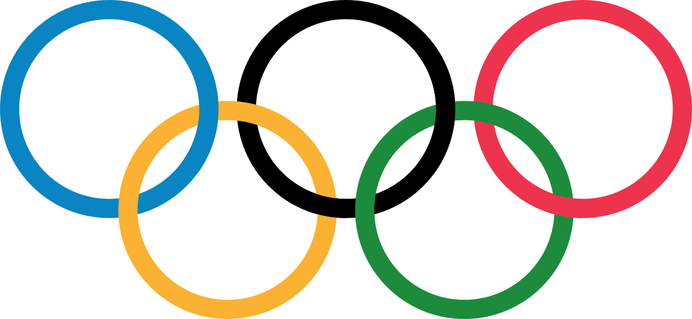
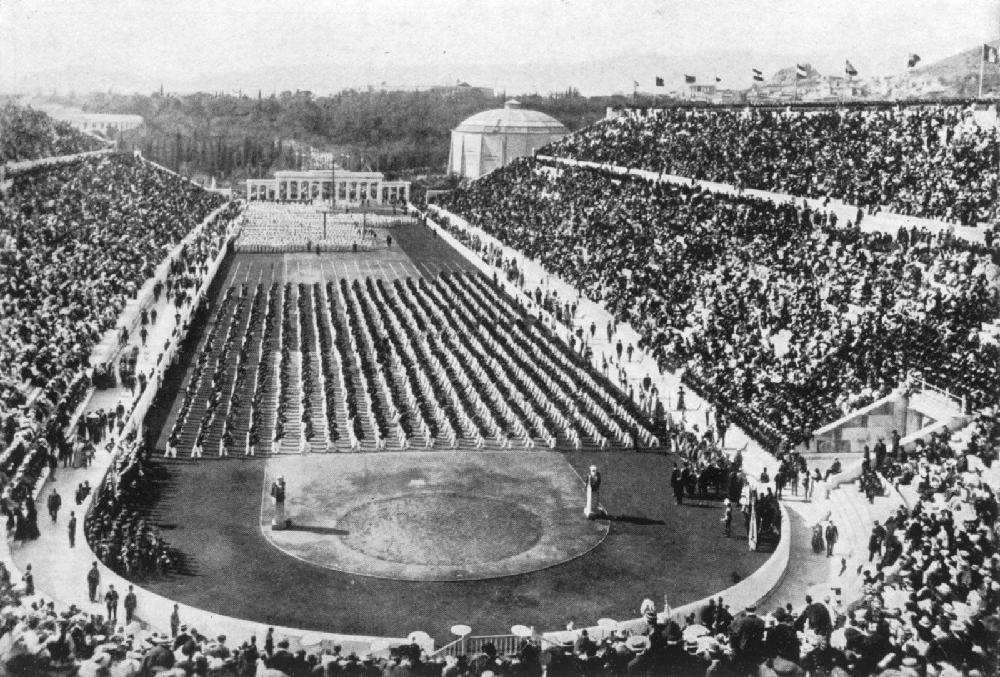

Étude des athlètes participants aux
Jeux Olympiques
entre 1896 et 2016

Nombre total de médailles olympiques remportées par pays participants
Toutes les médailles
Or
Argent
Bronze
Répartition du nombre d'athlètes en fonction du leur âge
Évolution du nombre total d'athlètes participants aux Jeux Olympiques
Tous
Masculin
Féminin